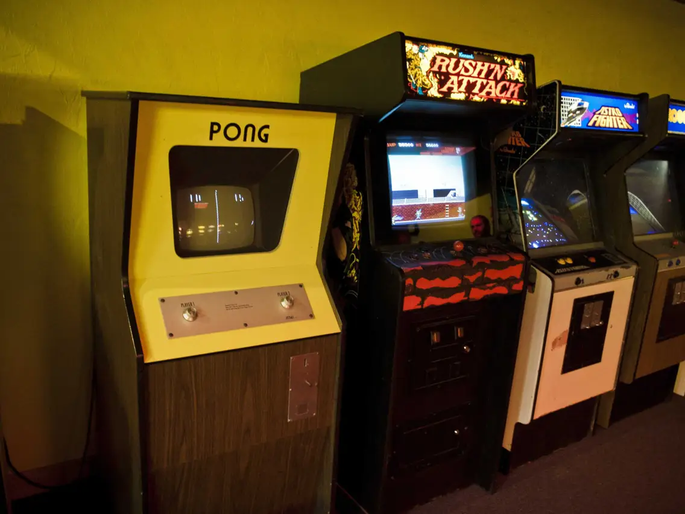
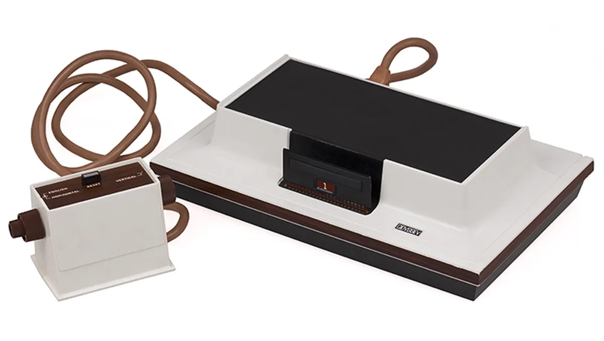
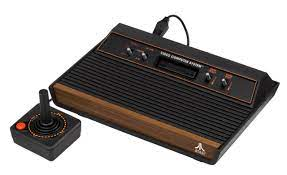
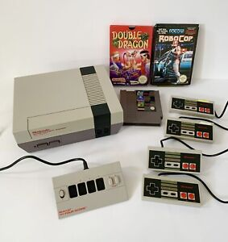
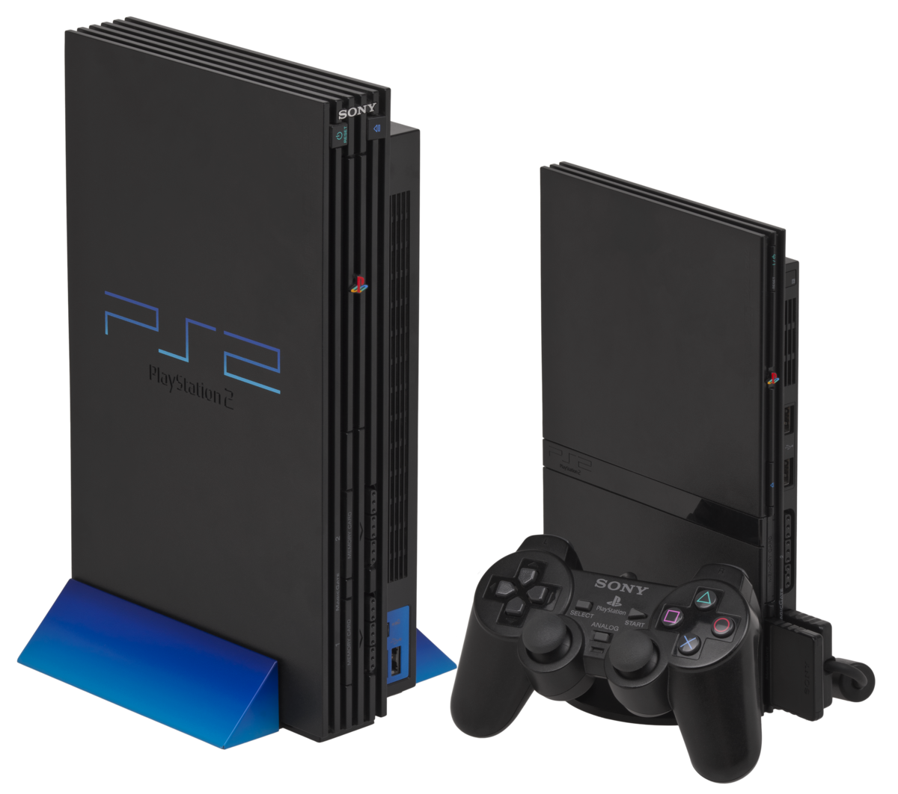

História dos Consoles
A história dos consoles de videogame remonta à década de 1970, com o lançamento de alguns dos primeiros consoles comerciais. Aqui estão alguns marcos importantes na evolução dos consoles:
Magnavox Odyssey (1972): Considerado o primeiro console de videogame doméstico, o Odyssey foi lançado pela Magnavox. Ele usava cartuchos de jogos e foi projetado para se conectar a uma televisão.
Atari 2600 (1977): Um dos consoles mais icônicos da história, o Atari 2600 trouxe jogos como "Space Invaders" e "Pac-Man" para as casas de milhões de pessoas. Foi um grande impulsionador da indústria de jogos e teve uma ampla variedade de jogos disponíveis.
Nintendo Entertainment System (NES) (1983): A Nintendo lançou o NES, que se tornou um enorme sucesso em todo o mundo. Introduziu franquias icônicas como "Super Mario Bros." e "The Legend of Zelda" e ajudou a reviver a indústria de jogos após a crise de 1983.
Sega Genesis (1988) e Super Nintendo Entertainment System (SNES) (1990): Esses dois consoles foram lançados na mesma época e se tornaram rivais diretos. A Sega Genesis apresentava o jogo "Sonic the Hedgehog", enquanto o SNES trouxe "Super Mario World" e "The Legend of Zelda: A Link to the Past".

Sony PlayStation (1994): O PlayStation da Sony foi um divisor de águas na indústria de jogos. Com gráficos avançados, uma grande biblioteca de jogos e suporte para CDs, ele abriu novas possibilidades para os desenvolvedores de jogos.

Nintendo 64 (1996): A Nintendo lançou o Nintendo 64, que trouxe gráficos 3D e o icônico controle com joystick analógico. Jogos como "Super Mario 64" e "The Legend of Zelda: Ocarina of Time" se tornaram clássicos instantâneos.

PlayStation 2 (2000): O PlayStation 2 se tornou o console mais vendido da história dos videogames. Além de jogos, ele também tinha recursos de reprodução de DVD, tornando-o um centro de entretenimento completo.
Desde então, muitos outros consoles foram lançados, como o Xbox da Microsoft, o Nintendo Wii e o PlayStation 4 e PlayStation 5 da Sony. Cada geração de consoles trouxe avanços tecnológicos, gráficos aprimorados, jogabilidade inovadora e uma vasta seleção de jogos para os jogadores desfrutarem.